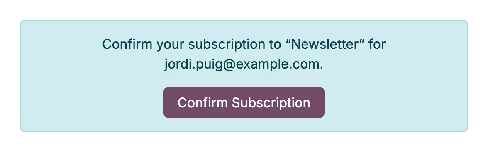

One email, one click, per subscription
Works with all new subscriptions on your website


The newsletter block, newsletter forms, and the newsletter box at checkout all send the confirmation email.
Only the button on the page confirms, so a mail security filter opening the link can't confirm for anyone.
Links expire after 7 days, and subscriptions still unconfirmed then are removed.
The email and the page are in the language the person used on your website.